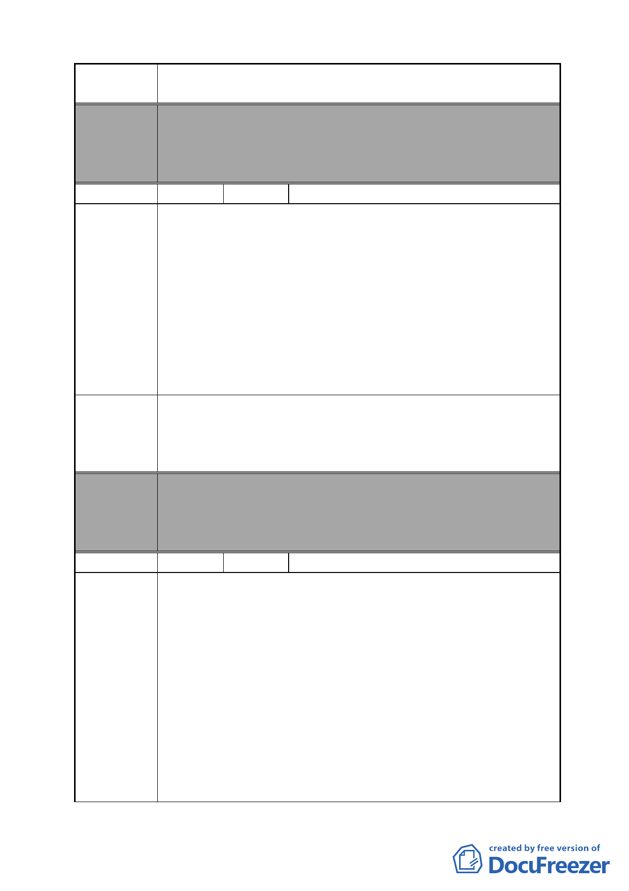

案 名 變更臺北市南港區鐵路地下化沿線土地主要計畫案
委員會
決議
編號
陳情理由
建議辦法
委員會
決議
編號
陳情理由
本案除文字誤繕應再作修正外，其餘依市府本次會議所送修
正計畫書內容通過。
（市府本次會議所送修正計畫書，業將陳情地點剔除於市地
重劃範圍）
17 陳情人 鄭朱福等 6 人代表（後附 55 人連署）
陳情地點：南港區向陽路 84 號至 110 號。
本私有地不同意（即反對）劃入作為北部流行音樂中心公園
用地。其理由為：
本區玉枝居民及土地所有權人均為世居於此及辛苦所得購
置，常居於此地，倘經編定為公園用地，勢必拆遷，此處數
百居民將居無定所，而在此工作亦面臨失業危機，然本案並
未接獲市府有關本案拆遷補償及核給費用或以最近適當地點
易屋移轉等方式進行協商，倘貿然變更編定，將影響此地居
民之權益。鑑於攸關本區居民生命財產及工作之保障，提此
建議案。
1.將本區剔除重劃範圍，維持現況，抑或變更為住商混合區。
2.本區位於規劃供北部流行音樂中心之邊陲地帶，面積甚小約
05 公頃，剔除重劃範圍外將不致影響此計畫之整體風貌，且
居民權益受到保障，此為雙贏之最佳辦法。
本案除文字誤繕應再作修正外，其餘依市府本次會議所送修
正計畫書內容通過。
（市府本次會議所送修正計畫書，業將陳情地點剔除於市地
重劃範圍）
18 陳情人 交通部臺灣鐵路管理局
1.本案之都市計畫變更範圍（編號 B）涉及本局南港調車場範
圍，經查公展案之回饋規定內容與現行公告實施之都市計畫
書規定顯有差異，攸關本局權益，其相關內容如下：
（1）現行實施之都市計畫為 90 年 9 月 28 日公告之「修訂臺
北市南港區都市計畫主要計畫通盤檢討案」，計畫書內載
明：「鐵路用地變更為『交通用地（兼供道路使用）』（編
號 PSC-6）未來由臺北市政府無償取得作為道路使用。」
（2）惟公展案載明：「90 年 9 月 28 日公告實施之『修訂臺北
市南港區都市計畫（主要計畫）通盤檢討案』內已將臺
鐵調車場部分土地劃設為『公園用地與交通用地』，並載
明由本府無償取得，該等土地因已計算變更回饋，故臺
鐵調車場街廓內臺灣鐵路管理局管有之策略型工業區土
- 30 -